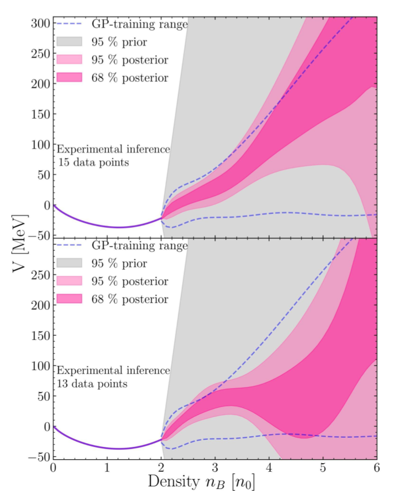

Latest News
Our recent work, "QCD Equation of State of Dense Nuclear Matter from a Bayesian Analysis of Heavy-Ion Collision Data," has been highlighted on the cover of Physical Review Letters and has been recommended as an editor's suggestion.
Exploring Dense Nuclear Matter: Bayesian Analysis constrains Quantum Chromodynamics Equation of State
In this work, we employed a bayesian analysis together with machine learning methods to constrain the Equation of State (EoS) of dense nuclear matter, a fundamental puzzle in high-energy nuclear physics.
The EoS is a theoretical input to various models which describes the behavior of nuclear matter in the form of thermodynamic quantities such as pressure and energy densities at different densities.
Despite being the prime goal of all heavy-ion programs worldwide, reconstructing the EoS from experimental data is not straightforward. It is an inverse problem that requires advanced data analysis techniques and pipelines to connect multiple experimental observables to the EoS driven evolution of dense nuclear matter.
The analysis obtained for the first time, tight constraints on the density-dependent EoS, up to four times the nuclear saturation density, using available experimental data from various heavy-ion collisions experiments. The letter also emphasizes the necessity of future intermediate beam energy heavy-ion collisions experiments for unambiguous extraction of the EoS.
These results bring us closer to understanding the phase diagram of nuclear matter, which has far-reaching implications for our understanding of neutron stars and the early universe, and also highlights the importance of future experiments in exploring these extreme states of matter.
Back to Homepage